~The Edge Slide Tool~
4/28/2025
How To use the Edge Slide Tool
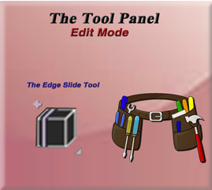
What is the Edge Slide Tool?
This is an interesting tool, in which you can slice one or more edges across faces that are sitting next to each other (adjacent faces). Although, this tool will come with a few restrictions. These restrictions deal with the selection of edges. For example, the selection of an edge must qualify as a valid loop, so the edge needs to be closed and not open ended.
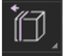
How To use the Edge Slide Tool
Once again, we can just start off with our default cube and bring it into the Edit Mode workspace.
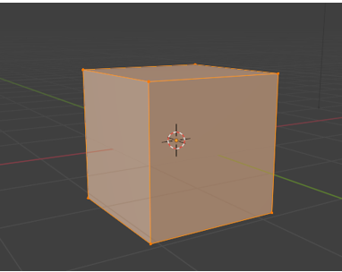
We will be working with edges with this tool, so change to Edge mode and select one of the edges.
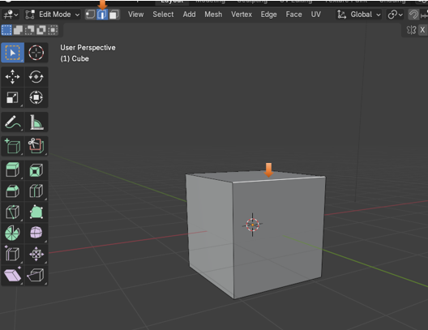
Now grab your Edge Slide tool, from the tool box.
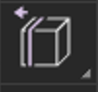
With this front, top edge selected, If you push back on the stick, you are narrowing the top face, but if you push the stick forward- downward, you are working with and narrowing the front face.
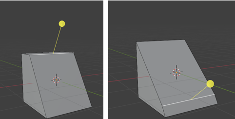
Selecting Two Edges
You can start with your cube and then you can select two edges. This way we can work with both of them
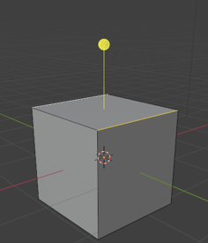
If you pull forward on the stick, you won’t do too much more than just shrinking the height of the box. Because all you are doing is reducing the height of both the front and back faces. But if you push backwards on the yellow stick, and work with that top face, you will cause the face in between the two edges (the top face) and this will shrink that face to a point, and then you have something that looks like a pointed roof top.
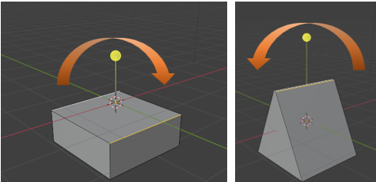
Edge Slide Dialog Box
The Edge Slide tool comes with one of those Last operation dialog boxes, and this time it pertains to the Edge slide tool.
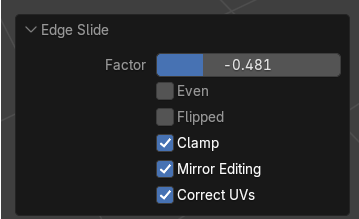
If you slide the Factor Slider back and forth, you are changing the amount of narrowness that you are giving to the affected face, using this tool. This slider does basically the same thing as if you moved the yellow stick on the Edge Slide tool back and forth.
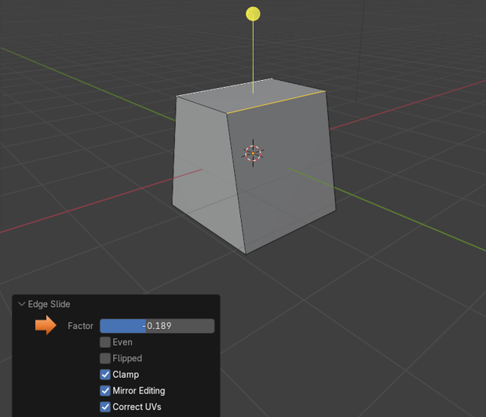
If you ticked the check box for the Even option, you would be making sure that your edge loop runs straight across an object.
Here we are taking a simple plane and extruding one of its sides to demonstrate this. Extruding a plane in this way will make it so that we have two faces, one right next to the other (adjacent faces). We are going to move things around a bit on those two faces, so we have something that looks more like our next illustration. Then we just added a loop cut to it. You will notice that the loop cut will come in like this. A tad bit bent.
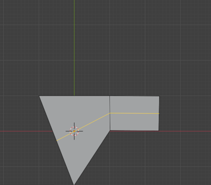
We can slide this loop cut down a bit using the Factor slider.
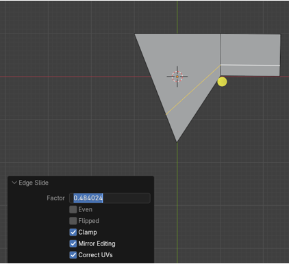
Tic on the Even check box and the loop cut will jump to the top of the object, and try and even itself out.
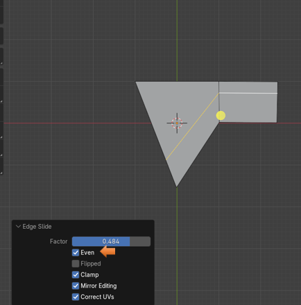
With the Even Check box checked, we can now take advantage of the checkbox below it to flip the Even Setting. You will see that will jump to a new location on the two faces, but still try to even itself out.
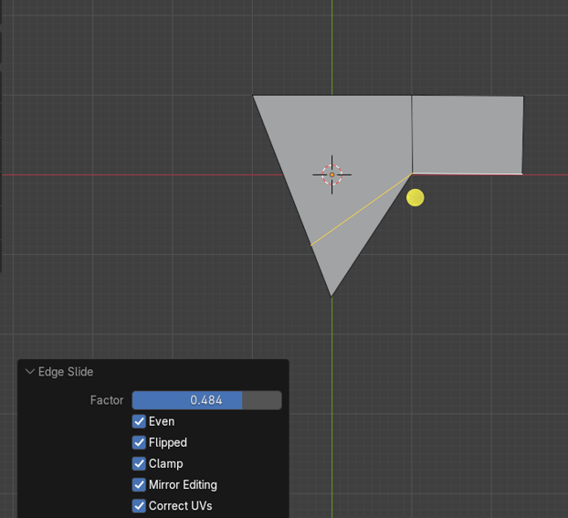
The Clamp checkbox is actually better illustrated with the cube. Here we have the Clamp setting on, and we have narrowed our top face into this position with the edge slide tool. If you uncheck the clamp tool now, you really won’t see much difference. That is because it is clamping down this first position so that you can make another move. So, now with the first move made just select the back edge, on this cube, and bring that edge downward into a new position.
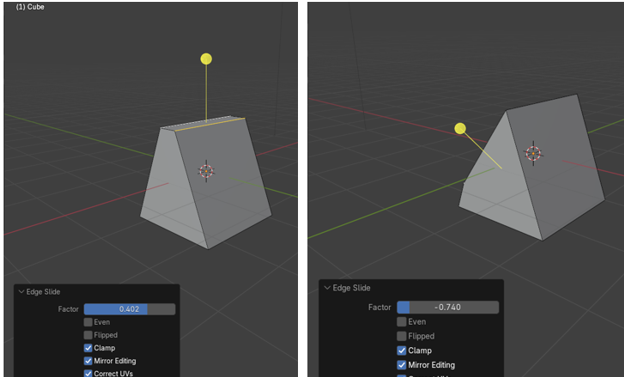
Now un Clamp that second movement by unchecking the box and you will see that the edge jumps back to its original position. So, it is unclamping itself and negating that second move.
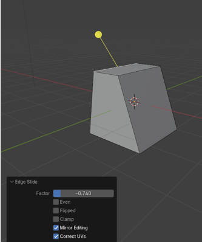
The Mirror Editing checkbox, is something that would be used if you had cut the object in half, and was working from one side of the object and having Blender automatically and simultaneously building the other side of the object based on your movements on the first side. We are not quite there yet, so for now we will just skip over this setting.
You won’t be using the Correct UV setting either, until you start to get into adding 2D textures to the 3D model, and this corrective check box would help with issues resulting from image distortions during these addition of textures type of procedures.
The Vertex Slide Tool
The Vertex Slide tool isn’t too much different from the Edge slide tool, except that you will move into Vertex selection mode, and deal with vertices, instead of edges.
You will find this tool tucked underneath of the Edge Slide tool, and you can get to it by going to the little arrow in the bottom right-hand corner of the tool.
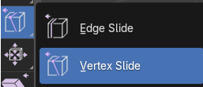
You can play with this tool, but it is just about the same thing as sliding around an edge. And even the dialog box is the same.
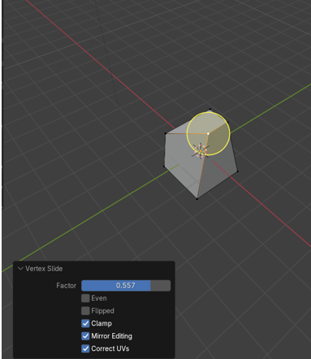
Well, that is about it, and just about everything you need to know about this tool, and sliding around edges in Blender.